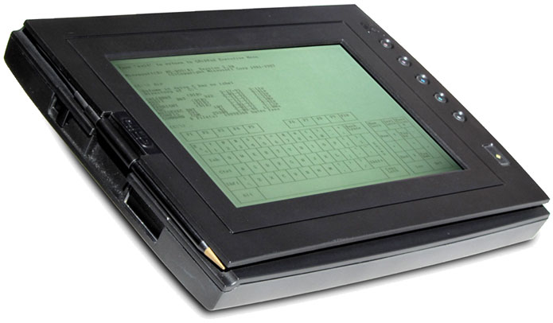
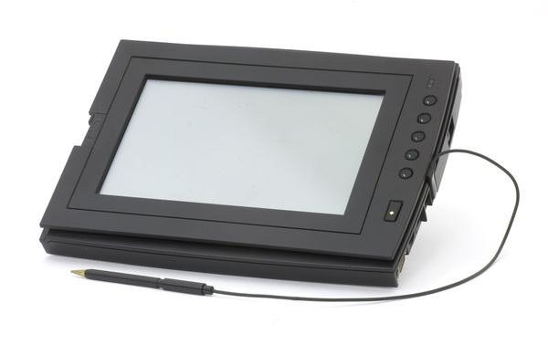

GRiDPad 100
First commercial tablet computer with pen input.

Overview
The GRiDPad 100 is a pen-based MS-DOS tablet computer that established the archetype for portable, stylus-driven handwriting recognition in a clamshell-free slate format. Released in 1989 by GRiD Systems Corporation, it combined a rugged magnesium case with a 640×400 monochrome LCD, a cordless pen, and the PalmPrint character recognizer—the work of Jeff Hawkins, later founder of Palm Computing. At 4.5 pounds, the GRiDPad targeted mobile professionals in insurance, healthcare, and field-service verticals, offering a keyboardless alternative to laptops for data entry.
Unlike the palm-top organizers of the era, the GRiDPad ran a full MS-DOS 3.3 environment and could host standard x86 applications, though its true novelty lay in a pen-aware application launcher and handwriting input panel that let users write directly into forms. The device could store up to 20 MB of files on its internal hard disk and supported PCMCIA expansion, enabling integration with wireless modems and custom peripherals.
The GRiDPad 100 demonstrated that stylus interaction on a portable screen was viable and economically useful, preceding the more famous Apple Newton by four years. It remains a landmark in mobile HCI for its early fusion of untethered pen input, rugged industrial design, and practical MS-DOS compatibility.
Deep dive
GRiD Systems, founded in 1979 by John Ellenby, had already pioneered the GRiD Compass—the first clamshell laptop—and later the GRiDCASE rugged laptops. By the late 1980s the company sought to eliminate the keyboard altogether for vertical-market tasks like insurance claims processing, hospital rounds, and inventory tracking. The result was a slate tablet that retained MS-DOS software compatibility while introducing a stylus-driven interface. The handwriting recognition engine, PalmPrint, was developed by Jeff Hawkins, who joined GRiD as a research engineer and would later build on this core technology to create the Palm Pilot.
The GRiDPad 100 centered on an 80C86-compatible NEC V40 processor running at 10 MHz, supported by 1 or 2 MB of RAM and a 20 MB Conner Peripherals hard disk drive. Its 9.5-inch black-on-white reflective LCD offered 640×400 CGA resolution with a 16:10 aspect ratio, making it legible even in direct sunlight. A cordless electromagnetic pen digitized ink at the display surface; the system could also accept finger touches. A single PCMCIA 2.0 Type II slot provided expansion for memory cards, modems, or custom radio modules. The magnesium-alloy enclosure, sealed ports, and shock-mounted drive ensured the 11.5 × 9.5 × 1.7-inch tablet could endure a one-foot drop onto concrete—a necessity for field use.
Pen input was handled through a DOS-resident driver and a character-mode shell called PenRight, which offered an icon launcher and a handwriting-recognition keyboard. Users wrote block-printed letters and numbers in designated on-screen boxes; PalmPrint analyzed strokes in a user-independent, trainable engine that achieved >95% accuracy for discrete characters. A gesture vocabulary let users tap, double-tap, or circle items to open files, invoke menus, and select text. Because the underlying OS was standard MS-DOS 3.3, any text-based application could be controlled with pen-emulating cursor movements, though the experience was markedly different from keyboard use.
GRiD Systems sold the GRiDPad primarily to corporate and government customers, including the U.S. Army, insurance adjusters, and healthcare providers. The base price was approximately $2,370 (equivalent to about $5,000 today). An upgraded model, the GRiDPad 1900, appeared in 1990 with a larger hard drive (60 MB) and 386SL compatibility. In 1993, GRiD was acquired by Tandy Corporation, which continued the product under the GRiD brand for a few years before folding the pen-computing division. The GRiDPad line never reached the consumer mass market, but it proved the commercial viability of pen-based mobile data collection.
The GRiDPad directly influenced the design of pen-based operating systems, including GO Corp.’s PenPoint and Microsoft Windows for Pen Computing. Jeff Hawkins’ learning from PalmPrint fed into the Graffiti handwriting system used on the PalmPilot, which popularized stylus interaction with a generation of handheld organizers. The device also established the rugged slate form factor later adopted by tablets in logistics, public safety, and military computing. Museum retrospectives rightly place the GRiDPad 100 as the first broadly commercial, MS-DOS-compatible pen tablet—a functional bridge between the clunky portables of the 1980s and the touch-centric smartphones and tablets of the 21st century.
Team & pioneers
- John Ellenby. Founder of GRiD Systems, driving force behind the GRiD Compass and GRiDCASE lines; set the vision for a pen-based tablet.
- Jeff Hawkins. Developer of the PalmPrint handwriting recognition engine used in the GRiDPad; later founded Palm Computing and created the PalmPilot.
Media


Sources
- GRiDPad tablet computer – CHM Revolution
- GridPad - Wikipedia
- GRiDPad - Old Computers
- GRiD Introduces PC-Compatible Computer that Recognizes Printed Handwriting – Pen-Based Computing History Museum
- GRiD System’s GRiDPad – Byte Magazine’s 1989 BYTE AWARD DISTINCTION
- Gridpad – Rhode Island Computer Museum